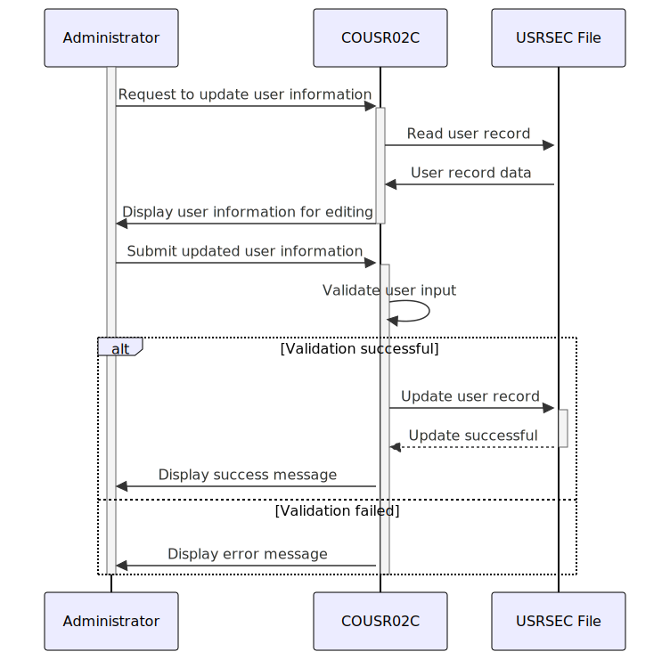

Gerado em: 1 de outubro de 2024
Título do Documento: Especificação do Programa de Atualização de Usuário CardDemo
Descrição Resumida: O programa de Atualização de Usuário CardDemo permite que administradores modifiquem informações de usuários existentes, incluindo nome, senha e tipo de usuário. Este programa garante a integridade dos dados por meio da validação de entrada e mantém a segurança do sistema controlando o acesso a dados confidenciais do usuário.
Histórias do Usuário: Como administrador, preciso ser capaz de atualizar as informações do usuário para manter os dados do usuário do sistema atualizados e precisos.
Épico Relacionado: 6 - Gerenciamento de Usuários e Segurança
Requisitos Técnicos:
Validação de Entrada do Usuário:
User ID não está vazio.First Name não está vazio.Last Name não está vazio.Password não está vazio.User Type não está vazio.Ler Dados do Usuário:
User ID da interface do usuário.USRSEC usando o User ID como chave.User ID for encontrado, recupera o registro do usuário.User ID não for encontrado, exibe uma mensagem de erro: User ID NOT found....Atualizar Dados do Usuário:
USRSEC.User User ID has been updated ....Modelos Relacionados:
SEC-USER-DATA: Representa um registro de usuário no arquivo USRSEC.
SEC-USR-ID: String - Identificador único para cada usuário.SEC-USR-FNAME: String - Primeiro nome do usuário.SEC-USR-LNAME: String - Sobrenome do usuário.SEC-USR-PWD: String - Senha do usuário para acesso ao sistema.SEC-USR-TYPE: String - Define a função e as permissões do usuário no aplicativo.Configurações:
WS-USRSEC-FILE: Caminho do arquivo para o arquivo USRSEC. Valor: USRSEC.CCDA-MSG-INVALID-KEY: Mensagem de erro para teclas inválidas pressionadas. Valor obtido do copybook CSMSG01Y.Melhorias de Código:
Melhorias de Segurança:
Diagrama Conceitual:
–Made by “Smart Engineering” (by Compass.UOL)–